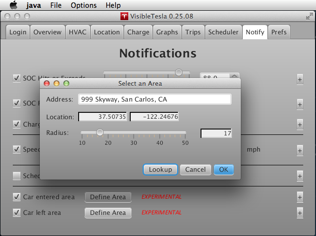

The Notify Tab
The Notify tab allows you to request notifications when certain types of events occur. For example, if your state of charge (SOC) drops below a certain level or rises above a certain level. Note that in order to receive a notification, VisibleTesla must be running. If the app is sleeping, notifications may be missed or delayed. For more details, consult the Understanding Sleep Mode section. The following screen shot gives an example of what the Notify Tab looks like. Each notification can be enabled or disabled individually using the associated checkbox.

Notifications are sent via email using the address specified in the Prefs Tab. Many wireless carriers provide an email-to-text gateway. You are provided an email address that corresponds to your cell phone's phone number. This will allow you to receive notifications as text messages. Please note that if you do so, normal text message rates may apply. Consult your carrier.
The following types of notifications are supported:
| Notification | Target | Description |
|---|---|---|
| SOC Hits or Exceeds | State of Charge percentage (0-100) | A notification will be sent if the SOC changes from a value that is below the target value to one that is equal to or greater than the target. You can use this notification if you want to be alerted when your car reaches a certain charge level. Note that the SOC must cross a threshold to get to this value. For example, if you specify 85% as the target, the SOC must go from a value below 85% to 85% or above for a notification to be sent. A notification will not be sent if the SOC is already at or above 85% when the app starts up. |
| SOC Falls Below | State of Charge percentage (0-100) | A notification will be sent if the SOC changes from a value that is above the target value to one that is less than the target. You can use this notification if you want to be alerted when your car's available charge drops to a certain level. |
| Charge State Becomes |
|
A notification will be sent if the car's charge state changes from some existing value to the specified target value. For example, it might change to Disconnected when you remove the power cord. If you select Anything as the target value, then any change in the charge state will cause a notification. Unknown is a catch-all for any state that is unknown to VisibleTesla. |
| Speed Hits or Exceeds | Speed in mph or km/h | A notification will be sent if the speed changes from a value that is below the target value to one that is equal to or greater than the target. This notification will not be sent more frequently than once per 30 minutes. Let's say you set the target to 75 mph and are driving very near that speed. Normal fluctuations in your driving might cause you to drop below then go above 75 mph many times. VisibleTesla will not issue a notification each time that happens. It will issue the first notification and then will not issue another until at least 30 minutes passes. |
| Scheduler Event Triggered | N/A | A notification will be sent if any scheduled activity occurs. |
| Car entered area [EXPERIMENTAL] | An area defined by a center point and a radius in meters | A notification will be sent if if your car starts outside of the specified area and later passes into that area. It does not have to stop there. See below for instructions on setting the area. |
| Car left area [EXPERIMENTAL] | An area defined by a center point and a radius in meters. | A notification will be sent if if your car starts inside of the specified area and later leaves that area. See below for instructions on setting the area. |
When using the Car entered area or Car left area notifications, you must define the area of interest. An area is defined by a location and a radius in meters which you set via an options dialog box. You get to that dialog box by pressing the Define Area button next to the Car entered area or Car left area checkboxes. You set the location by typing in an address. The corresponding latitude and longitude are determined for you. A slider allows you to specify a radius around that location to yield the area of interest.

The dialog box has three buttons at the bottom: Cancel, OK, and Lookup. You'll notice that the OK button is disabled any time you edit the address field. To make it active you must press the Lookup button. It will lookup the address and show it to you on a map to ensure it can be found and is what you intended. If it's not, you can change the address and try again. If it is what you want, just make sure the radius is set to your liking and hit OK.
Custom Address and Subject
VisibleTesla allows you to optionally specify the email address and subject to use for each type of notification. This can be useful in a number of circumstances. For example, you may wish to use email notifications for most things, but use text messages for notifications that you feel are more urgent. You could also use this facility if you wish to develop mail rules that kick off some activity based on a recipient email address and/or subject line.
To use this feature, press the + button at the far right of any notification definition. A dialog will pop up (see below) allowing you to specify an email address and/or a subject. You may also select Use default values, in which case the default email address and subject will be used. If you leave either field (email address or subject) blank, the default will be used for the blank item.

Notifications are sent via a hosted service (MailGun) and will not require you to enter your email credentials - just an email address. This need not be the same address that you use as your Tesla login. Messages are sent from the address "notifier@visibletesla.com". Do not reply to this address. It is not monitored. Advanced users may use their own MailGun account as described here.